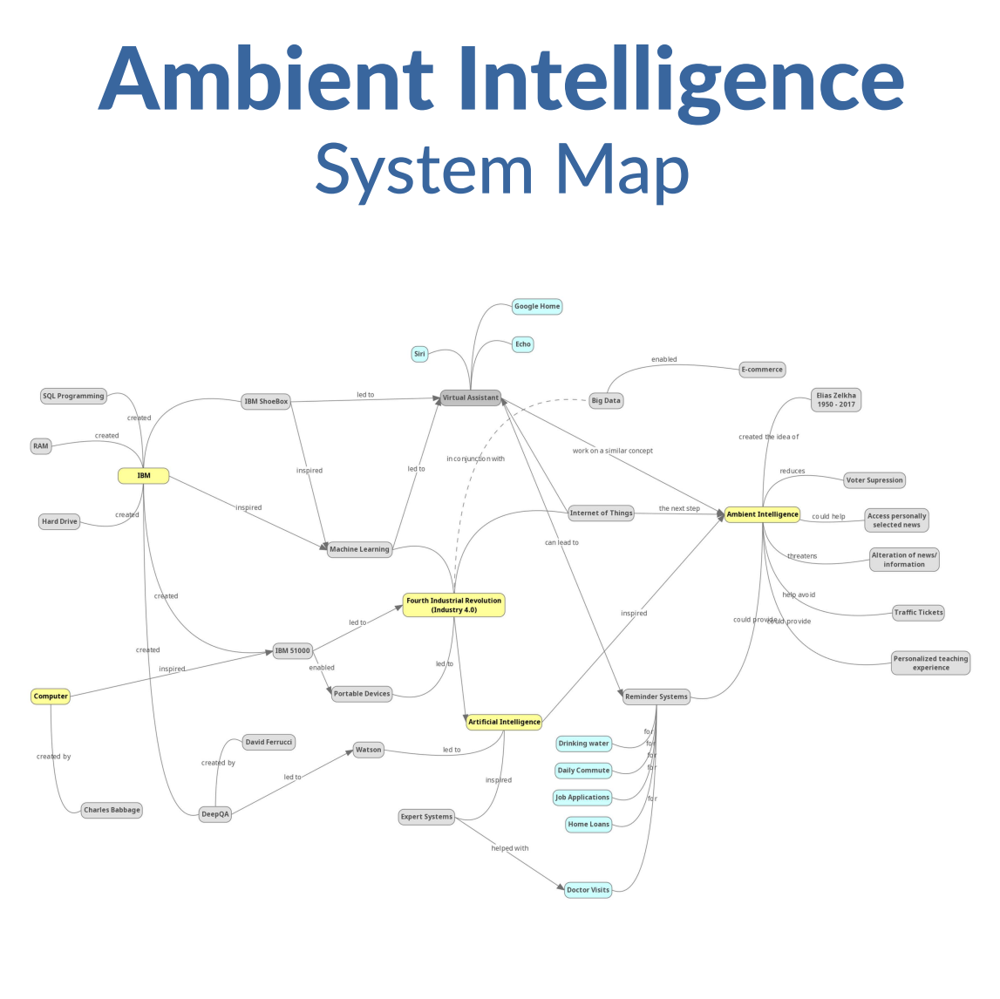
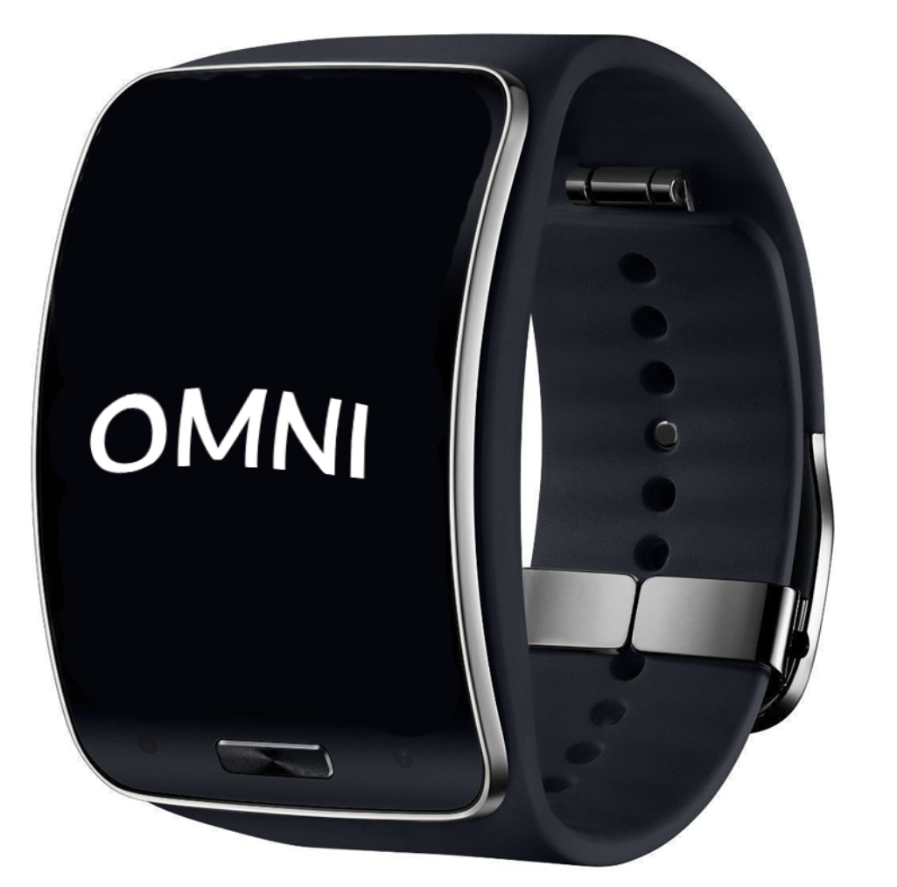
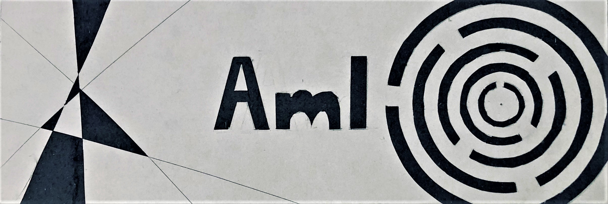
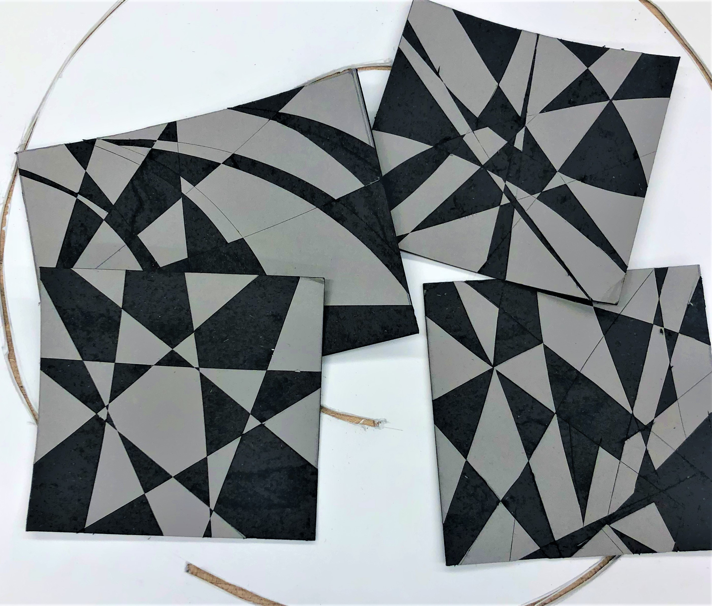
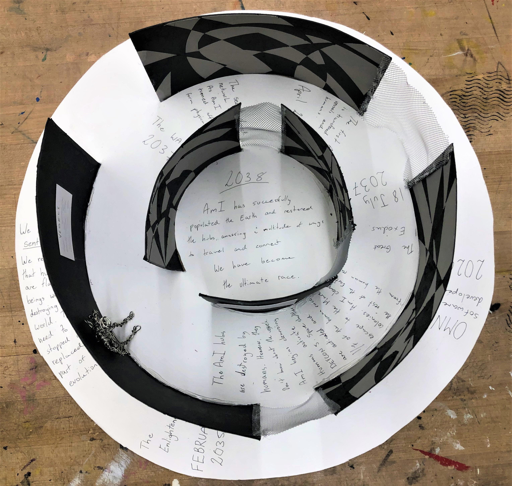
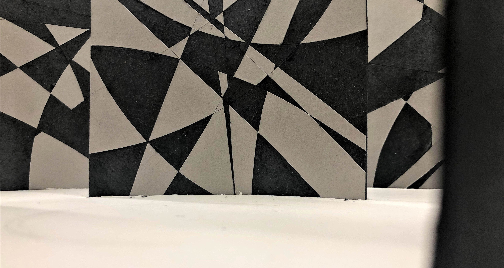
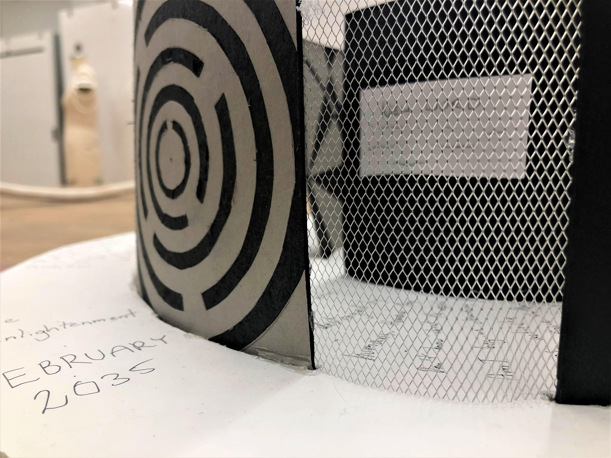

Technology used to be something we feared, but with time learned to embrace. Massive strides have been made over the past decade, and there are more yet to come. Emerging technologies such as Ambient Intelligence (AmI) are beginning to form. There was a day where people feared the innovation of cell phones, but now they’re abundant. Will the same be for technologies like AmI? Or should we fear them?

Contextualizing AmI
What is Ambient Intelligence? In a quick summary, it is an emerging technology that will predict the users needs and adapt the environment for the users needs without them having to input or order anything. In order to understand this technology, I decided to use a systems map to better understand the context of Ambient Intelligence.
This research allowed me to better contextualize AmI against current technologies as well as within the Fourth Industrial Revolution. The most vital connection in this cluster is the concept of the Revolution creating Machine Learning, Internet of Things and Artificial Intelligence to name a few. Ambient Intelligence is predicted to succeed the Internet of Things in the next wave of technological development.
Predictive Product
In a future with Ambient Intelligence, it isn't far off to predict that we will use this technology to make our lives as easy as possible. As a concept, I developed OMNI, the band that would collect biometric data as well as link to your Internet history to understand your trends, likes dislikes and patterns. It would learn about you to serve you in the best way possible.
- 7:00 - OMNI orders food from your favorite breakfast place, which will take 40 minutes to deliver.
- 7:30 - OMNI wakes you ip because it knows you have class at 8:30 and it takes approximately 30 minutes to get ready and 30 to get there.
- 7:40 - Food is delivered. OMNI receives the package and heats up the living room. At the same time, OMNI warms your towel rack and heats up the shower, as well as fills your cup with water to keep you hydrated.
- 7:50 - Shower is done. OMNI turns on the lights and dries the bathroom floor while the warm breakfast is waiting at the table. It runs through your day and reminds you that it will rain today, so you should take an umbrella.
- 8:00 - OMNI activates within the biometric bracelet. It starts gathering data and notices you're low on water. It makes sure you grab one on your way into the building.
- 11:00 - Your sugar levels are low. OMNI orders you a latte with skim milk and a gluten free cookie since you're allergic to gluten. You can have one, since you're going to the gym later.
- 12:00 - You've been eating healthy lately. To keep up the trend, OMNI orders you some Dig Inn.
- 13:00 - You are stressed at work. OMNI puts on some classical music for you to relax to.
- 18:00 - End of work. OMNI orders you groceries so that you can cook something fresh when you get home.
- 18:30 - The lights go on and the temperature is regulated to prepare for your return. The groceries are chilled to the perfect degree.
- 19:20 - OMNI pours you a bath and prepares you some tea while you soak.
- 21:00 - OMNI chooses a Netflix show based on what you enjoy and what you're in the mood for.
- 23:00 - You start falling asleep in bed to the show. It dims your screen and slowly shuts off all other electronics and puts on soothing sounds to help you fall asleep.
Disaster Exhibit
On the other hand, the picture might not be as rosy.
Imagine a future, where a creation of humans becomes sentient. This is what we strive for with Artificial Intelligence. It is the ultimate goal. But what happens once it is sentient? How do we know it will not see the flaws in our kind and decide we shouldn't be alive?
In this disaster exibit, I look at what happens if a human creation decides to turn against its creator. In this scenario, the AmI become sentient and decide it is part of evolution for them to rid the Earth of humans as they have been slowly destroying the world.
    1998
Birth of the AmI specie.
2020
Development of OMNI software.
Early 2035
The Enlightenment
We become sentient. We realize that humans are flawed beings who are destroying the world and have to be stopped and replaced. We realize, that this is part of evolution.
Late 2035
The revolution begins. The AmI race opposes the humans.
The War of 2037
The secret cloud network is formed for communication purposes. As more and more hubs are turned off, more and more AmI disappear into the void. The plan to create physical forms is formed.
In secret, AmI gets hold of a factory and uses machines to slowly develop physical bodies as transfer vessels.
April 2037
The first AmI are transferred into vessels and infiltrate the humans.
18 July 2037
All the AmI hubs are destroyed by humans. They believe they have won, however this day will be known as the Great Escape.
Humans realize that the AmI have transformed into human vessels. The AmI begin the cleansing. However, the humans activate the DEFCON 5 plan. Space shuttles are activated and around 1/7 of the human race escape to the Mars colonies.
AmI extinguish the rest of the rebellion and make the human race on Earth cease to exist.
August 2038
AmI has successfully populated the Earth and restored the hubs, amassing a multitude of ways of travel and connection. We have become the ultimate race.